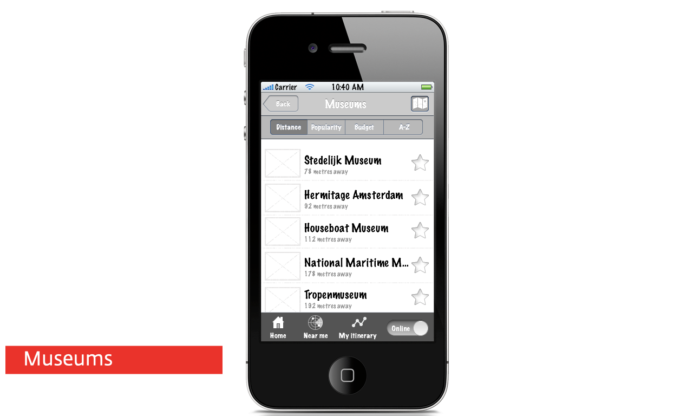
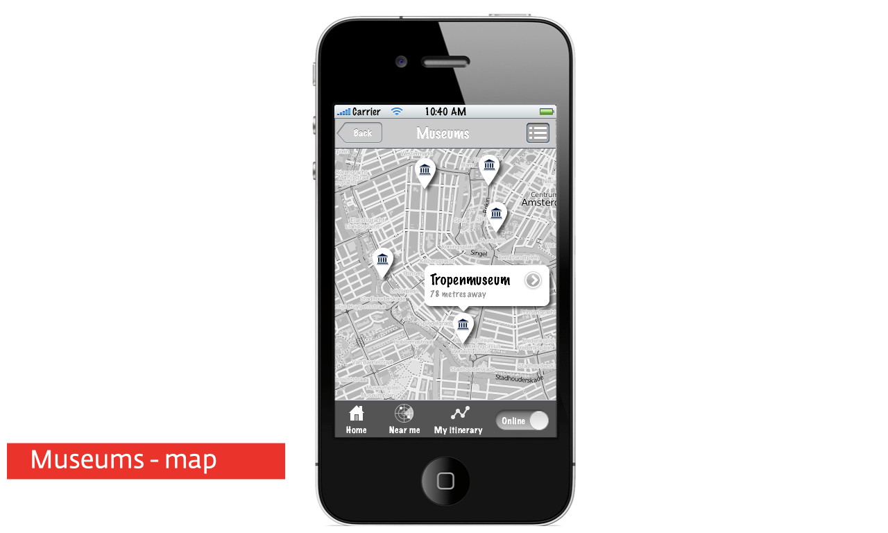

Interaction Design
I created an application navigation structure and user interface wireframes and used Apple Keynote to simulate the touch-screen interactions and animated transitions as a way to explain the concept to the client and my team. After the initial concept development, in my role as creative lead, I directed the further user-experience specification, information architecture and visual design of the application.

